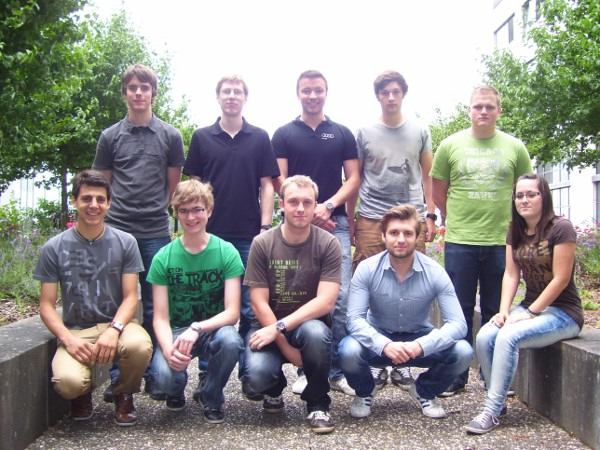

Yet Another Calendar ist eine Klausuraufgabe, die aus den Fächern
Projektmanagement und Webengineering des Studiengangs Angewandte
Informatik an der Dualen Hochschule Baden-Württemberg Karlsruhe
hervorgeht. Die beteiligten Studenten sind Jan Broß, Lukas
Carullo, Benjamin Ebling, Robert Illner, Michael Müller, Lukas
Niedermaier, Sören Pottberg, Veronika Schüle, Fabian Schwarz-Fritz
und Rafael Zeller.
Die Aufgabe war es, zwischen dem Projektstart am 16.05.12 und dem Endtermin am 18.07.12, eine Online-Terminverwaltung zu entwickeln, die die Anzeige, Erstellung und Änderung von Kalendereinträgen ermöglicht.
Die Aufgabe war es, zwischen dem Projektstart am 16.05.12 und dem Endtermin am 18.07.12, eine Online-Terminverwaltung zu entwickeln, die die Anzeige, Erstellung und Änderung von Kalendereinträgen ermöglicht.
Michael Müller
Projektleiter
Projektleiter
Sören Pottberg
Stellv. Projektleiter
Vorsitzender Architekturausschuss
Stellv. Projektleiter
Vorsitzender Architekturausschuss
Fabian Schwarz-Fritz
Entwicklungsleiter Backend
Softwarearchitekt
Entwicklungsleiter Backend
Softwarearchitekt
Benjamin Ebling
Entwicklungsleiter Frontend/UI
Softwarearchitekt
Entwicklungsleiter Frontend/UI
Softwarearchitekt
Veronika Schüle
Dokumentation
UI Design
Dokumentation
UI Design
Jan Broß
Entwickler Backend (Technologie)
Entwickler Backend (Technologie)
Lukas Carullo
Entwickler Backend
Entwickler Backend
Rafael Zeller
Entwickler Backend (Datenbank)
Entwickler Backend (Datenbank)
Robert Illner
Entwickler Frontend
UI Design (Zeichner)
Entwickler Frontend
UI Design (Zeichner)
Lukas Niedermaier
QS-Beauftragter
UI Design (Grafikdesigner)
QS-Beauftragter
UI Design (Grafikdesigner)